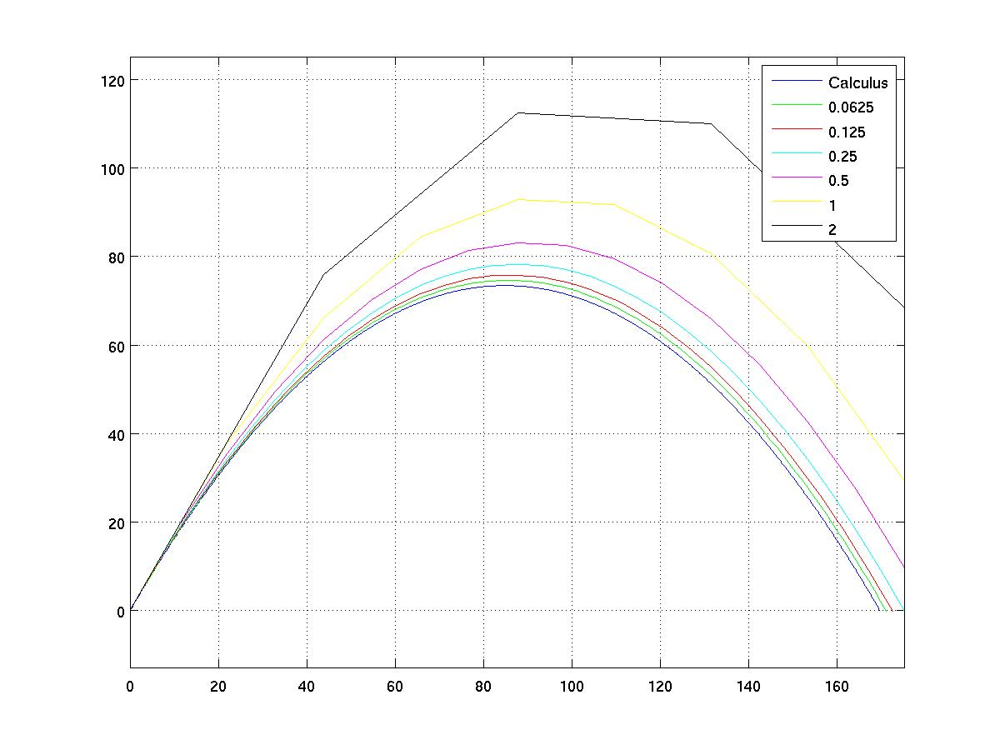

In the previous lecture, we animated the motion of a ball using the formula for the position relative to the initial velocity and acceleration.
We can generate an approximation to the motion more directly by simulating individual timesteps. All we need to know about physics is that the velocity is a measure of the rate of change in the position; that is, velocity is the derivative of the position with respect to time (e.g., dy/dt). The acceleration of gravity is a force that is measured as the rate of change of velocity over time.
So let's redo the 2D motion, this time calculating the x and y position at each timestep based on a discrete simulation.
Here is a graph showing the results of our simulation, based upon a
variety of timestep values (measured in seconds of simulation).

Notice that as the timestep grows smaller, our approximation seems to
be approaching the limit of the true parabola. However our trajectory
is quite far off for the larger timesteps.
As a starting point, here is code that provides a framework for a basic discrete simulation of the moving ball. If you prefer, this code may be downloaded as a file ball.m.
% A framework for doing a discrete simulation of a moving ball
g = 9.8; % gravity
iv = 43.81; % initial velocity (98 mph = 43.81 m/s)
angle = 60;
ivx = iv * cosd(angle); % initial velocity's x-component
ivy = iv * sind(angle); % initial velocity's y-component
minX = 0; maxX = 150; % setup bounds for a workspace window
minY = 0; maxY = 100; % setup bounds for a workspace window
window = [minX maxX minY maxY];
px = minX; % current position's x-component
py = minY; % current position's y-component
vx = ivx; % current velocity's x-component
vy = ivy; % current velocity's y-component
dt = 0.1; % simulate 1/10 second per iteration
% ------------ begin the simulation -------------
while px >= minX && px <= maxX && py >= minY && py <= maxY
plot(px, py, 'o');
axis equal;
axis(window);
grid on;
px = px + vx * dt; % velocity affects position
py = py + vy * dt;
vy = vy - g * dt; % acceleration affects velocity
pause(dt);
end
The code we generated in class can be found here: ballsim.m